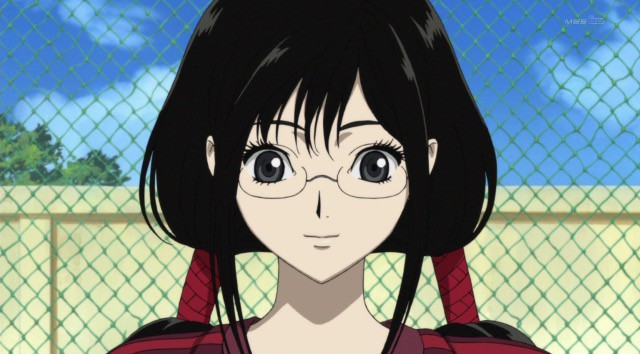

#4752 Blood-C
 
 IMDB-Wertung: 6.3 / 10
IMDB-Wertung: 6.3 / 10  Metascore: 0
Metascore: 0 
Saya Kisaragi ist ein ganz normales Mädchen, jedoch etwas tollpatschig und sehr liebenswert. Sie lebt mit ihrem Vater, dem Oberhaupt eines Schreins, bei dem sie "die Kunst des Schwertes" erlernt. Sie muss sich aber schon bald einer Prüfung unterziehen, die ihre Gutmütigkeit auf die Probe stellt. Wo auch immer ihre Reise hinführen wird und wie hoch der Preis auch sein mag, Saya hat sich geschworen, niemals aufzugeben...
Jahr: 2011
Dauer: 24 Minuten
FSK: 16
Land: Japan Studio: I-On New MediaTonspuren: DTS-HD - ,
Untertitel: Deutsch,
Auflösung: 1080p (1920x1080) Größe: 1495 MB
Genre: Action, Thriller, Horror, Fantasy, Animation/Trick, Mystery
Regisseur: Tsutomu Mizushima, Hiroyuki Hata, Yukina Hiiro, Takayuki Hamana, Kouhei Hatano, Yoshiaki Kyôgoku, Hisaya Takabayashi, Yasutaka Yamamoto
Drehbuch: Don Payne
Soundtrack:
Darsteller:
Datei: X:\HD-Anime-Serien\Blood-C\Blood-C S01E01 Der Kampf beginnt.mkv seit 14.11.2016
Festplatte: Gemischt-01+Anime
 Es gibt insgesamt 67 Filme in der Gruppe 'HD-Anime-Serien'
Es gibt insgesamt 67 Filme in der Gruppe 'HD-Anime-Serien'